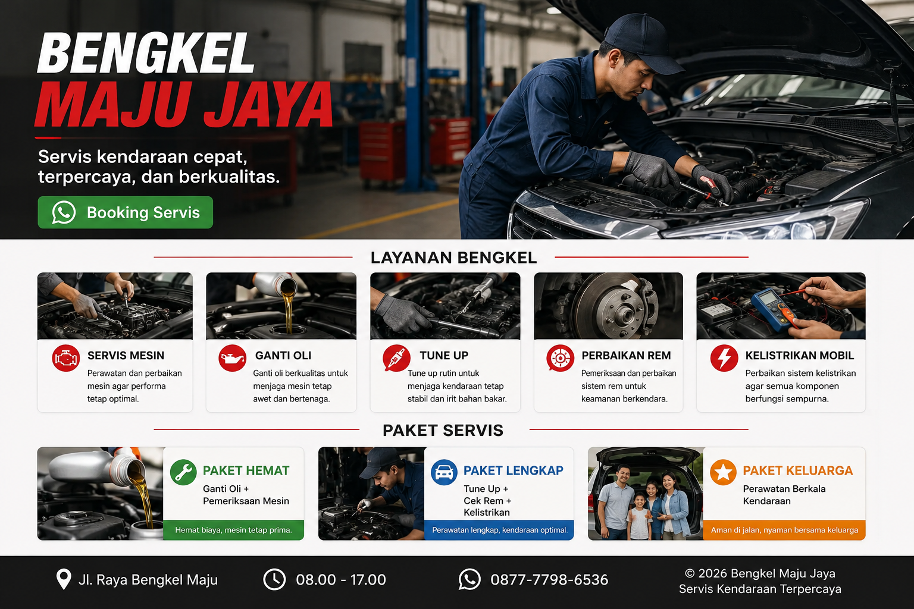
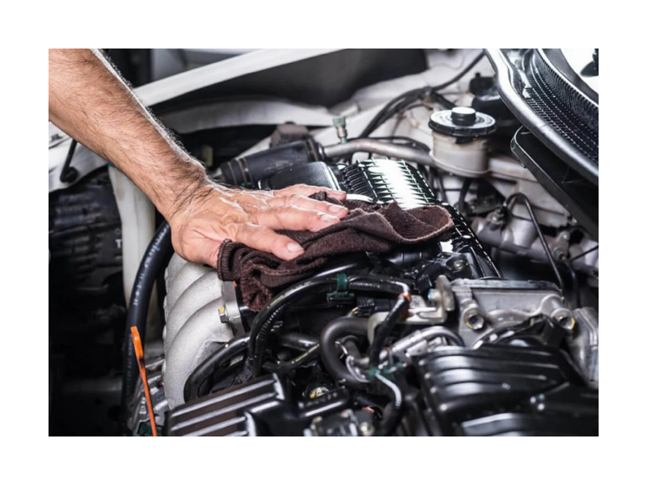
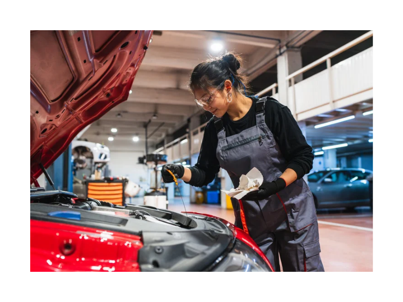
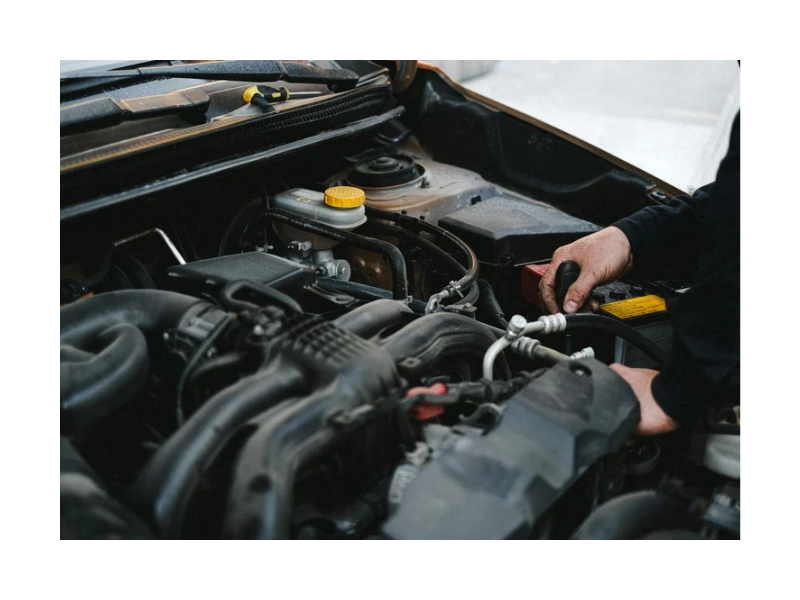
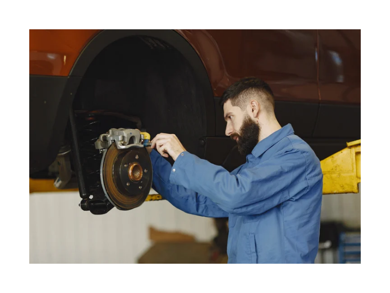
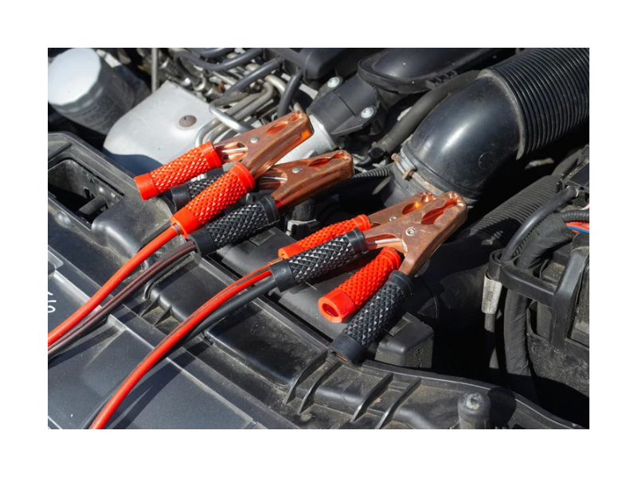

Servis kendaraan cepat, terpercaya, dan berkualitas.

Booking ServisBengkel Maju Jaya melayani perawatan dan perbaikan kendaraan dengan teknisi berpengalaman serta pelayanan yang terpercaya.
🔧 Servis Mesin

🛢️ Ganti Oli

🚗 Tune Up Kendaraan

🛞 Perbaikan Rem

⚡ Kelistrikan Mobil

🔧 Paket Hemat
Ganti Oli + Pemeriksaan Mesin
🚗 Paket Lengkap
Tune Up + Cek Rem + Kelistrikan
⭐ Paket Keluarga
Perawatan Berkala Kendaraan
Siap melayani servis kendaraan Anda.
📍 Alamat: Jl. Raya Bengkel Maju
🕒 Jam Buka: 08.00 - 17.00
Chat WhatsApp